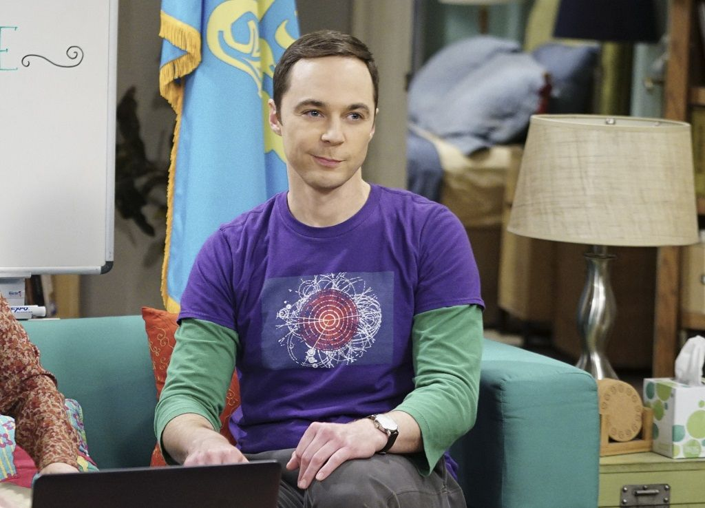

Sheldon Cooper
Datos Personales
- 26 de febrero de 1979, Medford, Texas
- Pasadena, California, Estados Unidos
- Ci de 187
Redes Sociales
Sobre mi
Soy un brillante físico teórico con un coeficiente intelectual de 187. Actualmente vivo con mi mujer Amy Farrah
Fowler,
con la cual he ganado un Premio Nobel de Física. Tengo toda mi vida planificada detalladamente mediante horarios
diarios y semanales.
Tengo grandes aficiones como ir a la tienda de comics con mis amigos Leonard, Howard y Raj, mi superheroe
favoritos es Flash.
Estudios
- School y HighSchool en Texas
- Física en la Universidad de Texas
- Doctorado en Física en Caltech
Experiencia
- Físico teórico en el Instituto de Tecnología de California
- Estudios en el campo de la teoría de cuerdas
-
Referencias
- Mi mujer Amy Farrah Fowler
- Doctor Rajesh Koothrappali
- Doctora Bernadette Rostenkowski Wolowitz
- Astronauta Howard Wolowitz
Y mis 2 amigos mas queridos en el mundo
- Doctor Leonard Hofstadter
- Penny Hofstadter